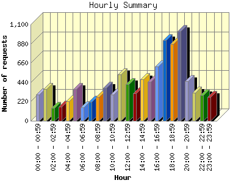
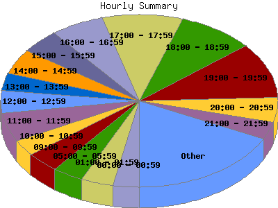

Report generated by Analog 6.0 and Report Magic 2.21
|
Web Server Statistics for "Harish Narayanan (hnarayan) - September 2005" Report generated by Analog 6.0 and Report Magic 2.21 |
The Hourly Summary identifies the level of activity broken down by each hour. Remember that one page hit can result in several server requests as the images for each page are loaded. This summary also compares the level of activity during working hours and after hours as a total for the report time frame.


| Hour | Number of requests | Number of bytes transferred | Percentage of the bytes | Percentage of the requests | |
|---|---|---|---|---|---|
| 1. | 00:00 - 00:59 | 299 | 18.311 MB | 3.53% | 3.04% |
| 2. | 01:00 - 01:59 | 365 | 9.606 MB | 1.85% | 3.71% |
| 3. | 02:00 - 02:59 | 148 | 3.981 MB | 0.77% | 1.51% |
| 4. | 03:00 - 03:59 | 161 | 5.619 MB | 1.08% | 1.64% |
| 5. | 04:00 - 04:59 | 224 | 7.153 MB | 1.38% | 2.28% |
| 6. | 05:00 - 05:59 | 361 | 19.688 MB | 3.80% | 3.67% |
| 7. | 06:00 - 06:59 | 155 | 5.960 MB | 1.15% | 1.58% |
| 8. | 07:00 - 07:59 | 217 | 11.428 MB | 2.20% | 2.21% |
| 9. | 08:00 - 08:59 | 272 | 9.526 MB | 1.84% | 2.77% |
| 10. | 09:00 - 09:59 | 375 | 20.636 MB | 3.98% | 3.82% |
| 11. | 10:00 - 10:59 | 298 | 14.207 MB | 2.74% | 3.03% |
| 12. | 11:00 - 11:59 | 529 | 115.797 MB | 22.33% | 5.38% |
| 13. | 12:00 - 12:59 | 416 | 31.300 MB | 6.04% | 4.23% |
| 14. | 13:00 - 13:59 | 315 | 6.697 MB | 1.29% | 3.21% |
| 15. | 14:00 - 14:59 | 473 | 12.181 MB | 2.35% | 4.81% |
| 16. | 15:00 - 15:59 | 443 | 12.217 MB | 2.36% | 4.51% |
| 17. | 16:00 - 16:59 | 620 | 13.954 MB | 2.69% | 6.31% |
| 18. | 17:00 - 17:59 | 922 | 32.349 MB | 6.24% | 9.38% |
| 19. | 18:00 - 18:59 | 874 | 11.523 MB | 2.22% | 8.89% |
| 20. | 19:00 - 19:59 | 1,024 | 23.509 MB | 4.53% | 10.42% |
| 21. | 20:00 - 20:59 | 456 | 19.895 MB | 3.84% | 4.64% |
| 22. | 21:00 - 21:59 | 318 | 95.070 MB | 18.33% | 3.24% |
| 23. | 22:00 - 22:59 | 292 | 7.686 MB | 1.48% | 2.97% |
| 24. | 23:00 - 23:59 | 271 | 10.244 MB | 1.98% | 2.76% |
| Work Hours (8:00am-4:59pm) | 3,741 | 236.515 MB | 45.61% | 38.07% | |
| After Hours (5:00pm-7:59am) | 6,087 | 282.021 MB | 54.39% | 61.93% | |
This report was generated on October 5, 2005 09:21.
Report time frame September 1, 2005 00:02 to September 30, 2005 23:47.
| Web statistics report produced by: | |
 Analog 6.0 Analog 6.0 |  Report Magic 2.21 Report Magic 2.21 |